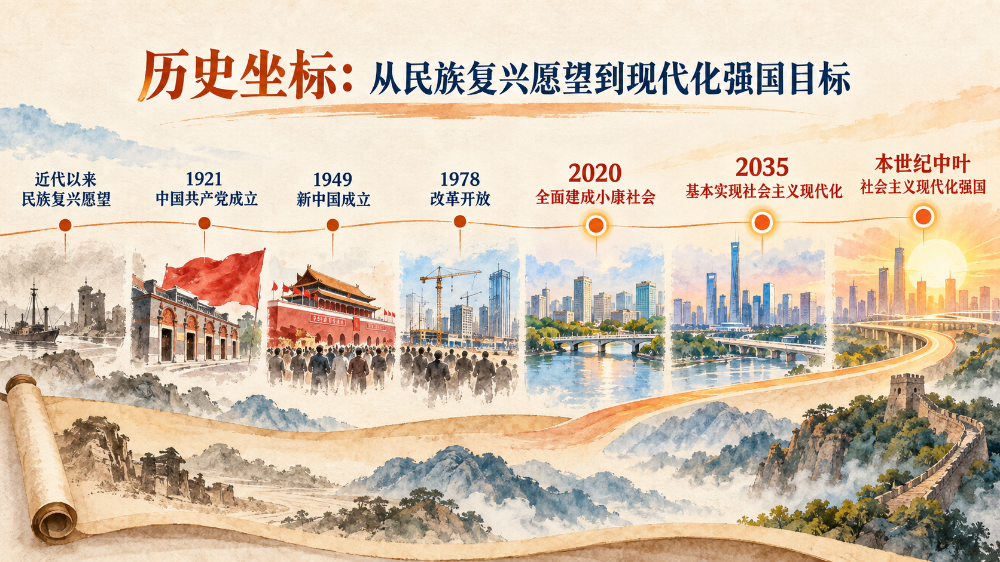

从共同愿望到国家战略
民族复兴不是突然出现的口号，而是近代中国遭遇深重危机以后形成并不断推进的历史主题。理解中国梦，需要把愿望、道路和行动联系起来：愿望回答中国人民追求什么，道路回答依靠什么制度和力量实现，行动则把长远目标分解为能够接续推进的战略步骤。
本节沿着“中国梦—全面小康—现代化强国”的递进关系展开。中国梦凝练民族复兴的总目标，全面建成小康社会是具有里程碑意义的阶段性成果，全面建成社会主义现代化强国则把新征程的奋斗目标具体化为两个阶段。
一、实现中华民族伟大复兴的中国梦
近代以后，中国逐步成为半殖民地半封建社会。争取民族独立、人民解放和实现国家富强、人民幸福，构成近代以来中国人民必须完成的两大历史任务。无数仁人志士提出救国方案并付诸实践，民族复兴由此成为几代中国人的共同愿望。中国共产党成立以后，把为中国人民谋幸福、为中华民族谋复兴确立为自己的初心使命，团结带领人民取得革命、建设和改革的历史性成就，使民族复兴进入不可逆转的历史进程。
习近平指出：“现在，大家都在讨论中国梦，我以为，实现中华民族伟大复兴，就是中华民族近代以来最伟大的梦想。”这句话把近代以来中国人民的历史追求凝练为中国梦。教材进一步指出，中国梦的本质是国家富强、民族振兴、人民幸福。三者并非三个可以相互分离的目标：国家富强为民族振兴和人民幸福提供物质与制度条件，民族振兴体现中华民族以自立、自强姿态屹立于世界民族之林，人民幸福则表明发展的最终落点是人民的生活和人的全面发展。
中国梦是国家的梦、民族的梦，也是每一个中国人的梦。个人梦想同国家前途、民族命运相联，并不意味着个人选择被抽象的宏大叙事取代，而是说明个人成长所需的教育、就业、公共服务、安全环境和发展机会，都同国家的发展条件密切相关。中国梦归根到底是人民的梦，必须紧紧依靠人民来实现，也必须不断为人民造福。
二、在中华大地上全面建成小康社会
“小康”在中华文化中承载着人民对安定富足生活的朴素向往。改革开放以后，中国共产党把这一传统理想转化为国家现代化建设的阶段性目标，并根据发展实践不断丰富其内涵。从“解决温饱”到“总体小康”，再从“全面建设小康社会”到“全面建成小康社会”，目标的变化反映了发展水平提高以后，人民对发展平衡性、协调性和可持续性的要求不断上升。
教材明确指出：“全面建成小康社会，强调的不仅是‘小康’，而且更重要的也是更难做到的是‘全面’。‘小康’讲的是发展水平，‘全面’讲的是发展的平衡性、协调性、可持续性。”因此，全面小康不能只用国内生产总值或居民收入的单一指标衡量。“全面”既包含覆盖全体人民，也包含经济、政治、文化、社会、生态文明各领域共同进步，还包含城乡、区域和不同群体都能在发展中获得实际改善。
2020 年，我国如期完成新时代脱贫攻坚目标任务，全面建成小康社会取得决定性成就。2021 年 7 月 1 日，习近平在庆祝中国共产党成立 100 周年大会上庄严宣告：“经过全党全国各族人民持续奋斗，我们实现了第一个百年奋斗目标，在中华大地上全面建成了小康社会，历史性地解决了绝对贫困问题，正在意气风发向着全面建成社会主义现代化强国的第二个百年奋斗目标迈进。”全面小康由此成为中华民族伟大复兴进程中的重要里程碑，并为迈向更高水平的现代化奠定基础。
参考资料｜“小康”怎样从传统理想转化为现代国家目标
“小康”一词见于《诗经·大雅·民劳》“民亦劳止，汔可小康”，表达让辛劳的民众稍得安定的愿望。《礼记·礼运》又以“大同”和“小康”描绘不同的社会状态。传统语境中的“小康”主要是一种生活理想和社会想象，尚不是具有时间表、指标体系和实施机制的现代国家发展战略。
改革开放之初，邓小平用“小康之家”说明中国式现代化的生活图景，后来“小康”逐步上升为国家发展目标。党的十六大提出全面建设小康社会，党的十八大提出全面建成小康社会。由“建设”到“建成”，说明阶段性目标进入决胜进程；由总体小康到全面小康，说明发展任务从主要解决有没有、够不够，进一步转向覆盖面、均衡性和质量。
资料来源：国务院新闻办公室《中国的全面小康》，2021 年 9 月。
三、全面建成社会主义现代化强国
全面建成小康社会不是现代化进程的终点，而是全面建设社会主义现代化国家的新起点。现代化强国目标把中华民族伟大复兴的长远愿景转化为分阶段推进的战略安排，使当前行动能够同未来目标保持方向一致。
党的十九大对全面建成社会主义现代化强国作出两步走战略安排：从 2020 年到 2035 年基本实现社会主义现代化；从 2035 年到本世纪中叶，把我国建成富强民主文明和谐美丽的社会主义现代化强国。第一阶段是在全面建成小康社会基础上继续发展，推动经济实力、科技实力显著提升，人民生活更加宽裕，基本公共服务均等化等取得新进展。第二阶段则指向综合国力和国际影响力领先、全体人民共同富裕基本实现、人民享有更加幸福安康生活的强国目标。
两个阶段既有明确区分，又构成连续过程。2035 年的“基本实现”不是本世纪中叶目标的简单缩小版，而是从发展基础、制度成熟、公共服务、生态环境和人的全面发展等方面形成新的起点；本世纪中叶的“建成强国”则要求各领域现代化达到更高水平。分析任何一项中长期规划，都需要区分阶段目标、实现条件和具体行动，观察近期任务怎样为长期目标积累能力。
